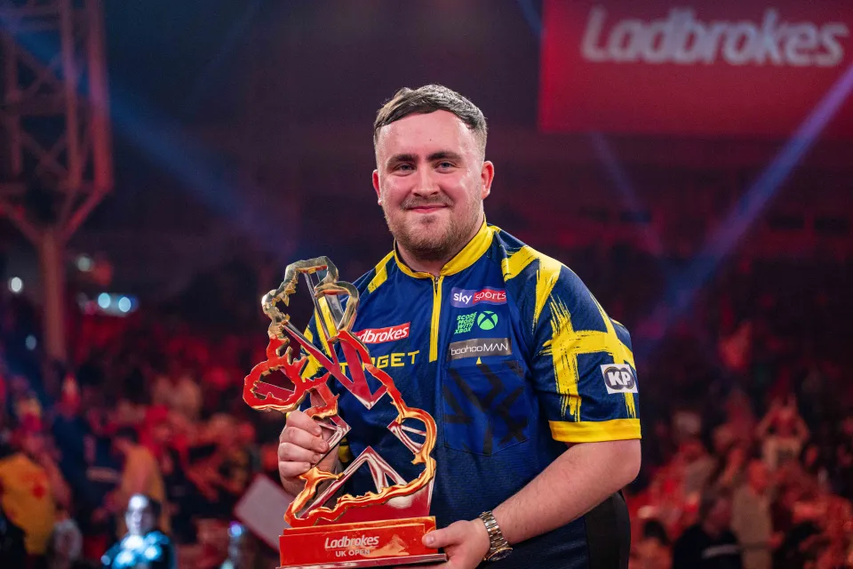

A „darts FA-kupája”. Különlegessége, hogy nincs kiemelés, minden forduló után teljesen nyílt sorsolást tartanak, és az amatőrök is esélyt kapnak a kvalifikációra.
Az év negyedik nagy tornája.
Márciusi torna. Érdekesség, hogy egy sátor szerű helyen rendezik a versenyt, és egyszerre nyolc színpadon is játszanak, hiszen 160 játékos csap össze.
Március eleje
Minehead - Butlin's Minehead Resort (Anglia)